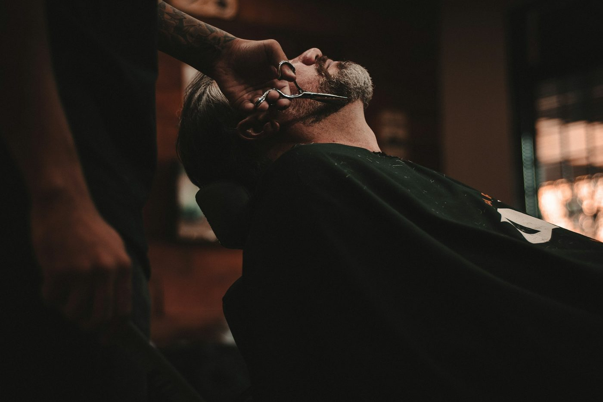
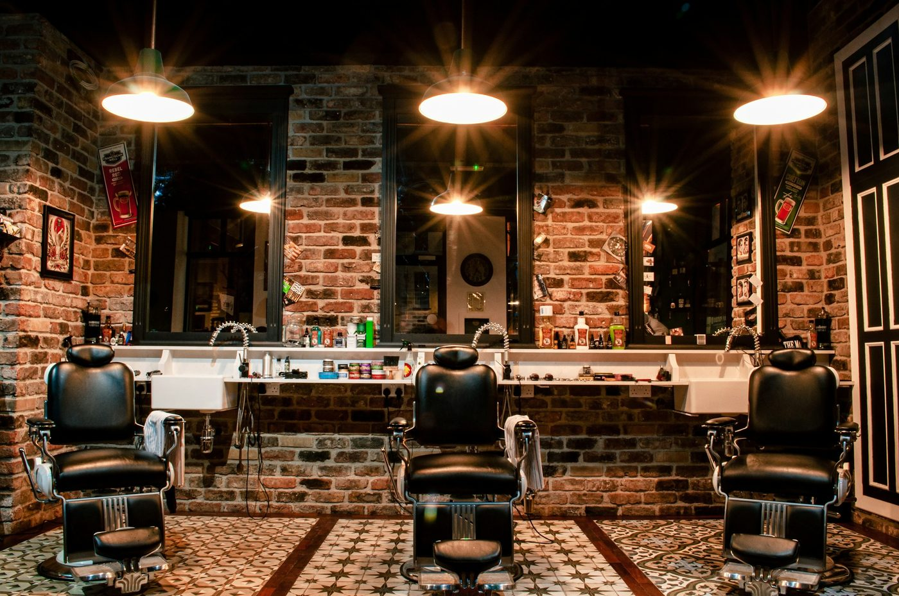
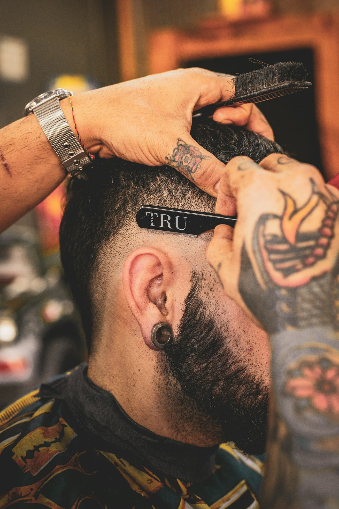
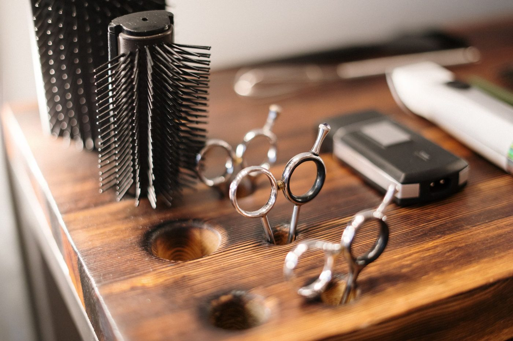
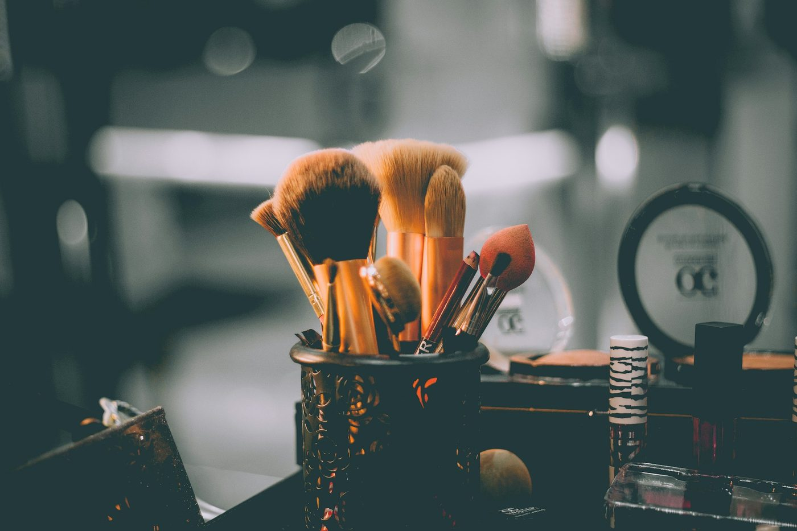

Barber studio concept
Quiet
cuts.
Exact
lines.
A dark, unhurried barbershop — designed as an independent concept to show how a small studio can feel considered on every screen.
Reserve a chairThe room
A slower hour in the chair.
Hale is a fictional studio drawn for WEBAUR’s portfolio. The cuts, the quiet and the gold are real design decisions. The shop itself is not.

Services
The chair.
Prices are examples for this concept, shown as they might appear on a live menu.
The studio
The craft, close in.



Visit
How a visit would work.
Hours
Tue–Fri 10–19
Saturday 10–16
Sun–Mon closed
The room
A corner studio concept for a quiet street. No real address is listed — this page is a design study, not a shop you can visit.
Booking
On a live site this button would open the shop’s real booking tool. Nothing can be reserved from this concept.
Concept project — no real booking. Hale Barber Studio is a demonstration website by WEBAUR. The “Reserve a chair” buttons on this page only move you to this section. They do not send a request or book an appointment.